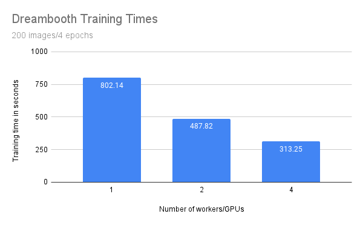

Fine-tune of Stable Diffusion with DreamBooth and Ray Train
Contents
Fine-tune of Stable Diffusion with DreamBooth and Ray Train#
This is an intermediate example that shows how to do DreamBooth fine-tuning of a Stable Diffusion model using Ray Train. It demonstrates how to use Ray Data with PyTorch Lightning in Ray Train.
See the original DreamBooth project homepage for more details on what this fine-tuning method achieves.

This example builds on this Hugging Face 🤗 tutorial. See the Hugging Face tutorial for useful explanations and suggestions on hyperparameters. Adapting this example to Ray Train allows you to easily scale up the fine-tuning to an arbitrary number of distributed training workers.
Compute requirements:
Because of the large model sizes, you need a machine with at least 1 A10G GPU.
Each training worker uses 1 GPU. You can use multiple GPUs or workers to leverage data-parallel training to speed up training time.
This example fine-tunes both the text_encoder and unet models used in the stable diffusion process, with respect to a prior preserving loss.
Find the full code repository at https://github.com/ray-project/ray/tree/master/doc/source/templates/05_dreambooth_finetuning
How it works#
This example uses Ray Data for data loading and Ray Train for distributed training.
Data loading#
Note
Find the latest version of the code at dataset.py
The latest version might differ slightly from the code presented here.
Use Ray Data for data loading. The code has three interesting parts.
First, load two datasets using ray.data.read_images():
instance_dataset = read_images(args.instance_images_dir)
class_dataset = read_images(args.class_images_dir)
Then, tokenize the prompt that generated these images:
tokenizer = AutoTokenizer.from_pretrained(
pretrained_model_name_or_path=args.model_dir,
subfolder="tokenizer",
)
def _tokenize(prompt):
return tokenizer(
prompt,
truncation=True,
padding="max_length",
max_length=tokenizer.model_max_length,
return_tensors="pt",
).input_ids.numpy()
# Get the token ids for both prompts.
class_prompt_ids = _tokenize(args.class_prompt)[0]
instance_prompt_ids = _tokenize(args.instance_prompt)[0]
And lastly, apply a torchvision preprocessing pipeline to the images:
transform = transforms.Compose(
[
transforms.ToTensor(),
transforms.Resize(
image_resolution,
interpolation=transforms.InterpolationMode.BILINEAR,
antialias=True,
),
transforms.RandomCrop(image_resolution),
transforms.Normalize([0.5], [0.5]),
]
)
def transform_image(
batch: Dict[str, np.ndarray], output_column_name: str
) -> Dict[str, np.ndarray]:
transformed_tensors = [transform(image).numpy() for image in batch["image"]]
batch[output_column_name] = transformed_tensors
return batch
Apply all three parts in a final step:
# For each dataset:
# - perform image preprocessing
# - drop the original image column
# - add a new column with the tokenized prompts
instance_dataset = (
instance_dataset.map_batches(
transform_image, fn_kwargs={"output_column_name": "instance_image"}
)
.drop_columns(["image"])
.add_column("instance_prompt_ids", lambda df: [instance_prompt_ids] * len(df))
)
Distributed training#
Note
Find the latest version of the code at train.py
The latest version might differ slightly from the code presented here.
The central part of the training code is the training function. This function accepts a configuration dict that contains the hyperparameters. It then defines a regular PyTorch training loop.
You interact with the Ray Train API in only a few locations, which follow in-line comments in the snippet below.
Remember that you want to do data-parallel training for all the models.
Load the data shard for each worker with
session.get_dataset_shard("train")`Iterate over the dataset with
train_dataset.iter_torch_batches()`Report results to Ray Train with
session.report(results)`
The code is compacted for brevity. The full code is more thoroughly annotated.
def train_fn(config):
# Load pre-trained models.
(
text_encoder,
noise_scheduler,
vae,
unet,
unet_trainable_parameters,
text_trainable_parameters,
) = load_models(config)
text_encoder = train.torch.prepare_model(text_encoder)
unet = train.torch.prepare_model(unet)
# manually move to device as `prepare_model` can't be used on
# non-training models.
vae = vae.to(train.torch.get_device())
# Use the regular AdamW optimizer to work with bfloat16 weights.
optimizer = torch.optim.AdamW(
itertools.chain(unet_trainable_parameters, text_trainable_parameters),
lr=config["lr"],
)
train_dataset = train.get_dataset_shard("train")
# Train!
num_train_epochs = config["num_epochs"]
print(f"Running {num_train_epochs} epochs.")
global_step = 0
for _ in range(num_train_epochs):
if global_step >= config["max_train_steps"]:
print(f"Stopping training after reaching {global_step} steps...")
break
for _, batch in enumerate(
train_dataset.iter_torch_batches(
batch_size=config["train_batch_size"],
device=train.torch.get_device(),
)
):
batch = collate(batch, torch.bfloat16)
optimizer.zero_grad()
# Convert images to latent space
latents = vae.encode(batch["images"]).latent_dist.sample() * 0.18215
# Sample noise that we'll add to the latents
noise = torch.randn_like(latents)
bsz = latents.shape[0]
# Sample a random timestep for each image
timesteps = torch.randint(
0,
noise_scheduler.config.num_train_timesteps,
(bsz,),
device=latents.device,
)
timesteps = timesteps.long()
# Add noise to the latents according to the noise magnitude at each timestep
# (this is the forward diffusion process)
noisy_latents = noise_scheduler.add_noise(latents, noise, timesteps)
# Get the text embedding for conditioning
encoder_hidden_states = text_encoder(batch["prompt_ids"])[0]
# Predict the noise residual.
model_pred = unet(
noisy_latents.to(train.torch.get_device()),
timesteps.to(train.torch.get_device()),
encoder_hidden_states.to(train.torch.get_device()),
).sample
target = get_target(noise_scheduler, noise, latents, timesteps)
loss = prior_preserving_loss(
model_pred, target, config["prior_loss_weight"]
)
loss.backward()
# Gradient clipping before optimizer stepping.
clip_grad_norm_(
itertools.chain(unet_trainable_parameters, text_trainable_parameters),
config["max_grad_norm"],
)
optimizer.step() # Step all optimizers.
global_step += 1
results = {
"step": global_step,
"loss": loss.detach().item(),
}
train.report(results)
if global_step >= config["max_train_steps"]:
break
You can then run this training function with Ray Train’s TorchTrainer:
args = train_arguments().parse_args()
# Build training dataset.
train_dataset = get_train_dataset(args)
print(f"Loaded training dataset (size: {train_dataset.count()})")
# Train with Ray Train TorchTrainer.
trainer = TorchTrainer(
train_fn,
train_loop_config=vars(args),
scaling_config=ScalingConfig(
use_gpu=True,
num_workers=args.num_workers,
),
datasets={
"train": train_dataset,
},
)
result = trainer.fit()
Configure the scale#
In the TorchTrainer, you can easily configure the scale.
The preceding example uses the num_workers argument to specify the number
of workers. This argument defaults to 2 workers with 1 GPU each, totalling to 2 GPUs.
To run the example on 4 GPUs, set the number of workers to 4 using --num-workers=4.
Or you can change the scaling config directly:
scaling_config=ScalingConfig(
use_gpu=True,
- num_workers=args.num_workers,
+ num_workers=4,
)
If you’re running multi-node training, make sure that all nodes have access to a shared
storage like NFS or EFS. In the following example script, you can adjust the location with the
DATA_PREFIX environment variable.
Training throughput#
Compare throughput of the preceding training runs that used 1, 2, and 4 workers or GPUs.
Consider the following setup:
1 GCE g2-standard-48-nvidia-l4-4 instance with 4 GPUs
Model as configured below
Data from this example
200 regularization images
Training for 4 epochs (local batch size = 2)
3 runs per configuration
You expect that the training time should benefit from scale and decreases when running with more workers and GPUs.
Number of workers/GPUs |
Training time (seconds) |
|---|---|
1 |
802.14 |
2 |
487.82 |
4 |
313.25 |
While the training time decreases linearly with the amount of workers/GPUs, you can observe some penalty. Specifically, with double the amount of workers you don’t get half of the training time.
This penalty is most likely due to additional communication between processes and the transfer of large model weights. You are also only training with a batch size of one because of the GPU memory limitation. On larger GPUs with higher batch sizes you would expect a greater benefit from scaling out.
Run the example#
First, download the pre-trained Stable Diffusion model as a starting point.
Then train this model with a few images of a subject.
To achieve this, choose a non-word as an identifier, such as unqtkn. When fine-tuning the model with this subject, you teach the model that the prompt is A photo of a unqtkn <class>.
After fine-tuning you can run inference with this specific prompt.
For instance: A photo of a unqtkn <class> creates an image of the subject.
Similarly, A photo of a unqtkn <class> at the beach creates an image of the subject at the beach.
Step 0: Preparation#
Clone the Ray repository, go to the example directory, and install dependencies.
git clone https://github.com/ray-project/ray.git
cd doc/source/templates/05_dreambooth_finetuning
pip install -Ur dreambooth/requirements.txt
Prepare some directories and environment variables.
# TODO: If running on multiple nodes, change this path to a shared directory (ex: NFS)
export DATA_PREFIX="/tmp"
export ORIG_MODEL_NAME="CompVis/stable-diffusion-v1-4"
export ORIG_MODEL_HASH="b95be7d6f134c3a9e62ee616f310733567f069ce"
export ORIG_MODEL_DIR="$DATA_PREFIX/model-orig"
export ORIG_MODEL_PATH="$ORIG_MODEL_DIR/models--${ORIG_MODEL_NAME/\//--}/snapshots/$ORIG_MODEL_HASH"
export TUNED_MODEL_DIR="$DATA_PREFIX/model-tuned"
export IMAGES_REG_DIR="$DATA_PREFIX/images-reg"
export IMAGES_OWN_DIR="$DATA_PREFIX/images-own"
export IMAGES_NEW_DIR="$DATA_PREFIX/images-new"
# TODO: Add more worker nodes and increase NUM_WORKERS for more data-parallelism
export NUM_WORKERS=2
mkdir -p $ORIG_MODEL_DIR $TUNED_MODEL_DIR $IMAGES_REG_DIR $IMAGES_OWN_DIR $IMAGES_NEW_DIR
Step 1: Download the pre-trained model#
Download and cache a pre-trained Stable Diffusion model locally.
python cache_model.py --model_dir=$ORIG_MODEL_DIR --model_name=$ORIG_MODEL_NAME --revision=$ORIG_MODEL_HASH
You can access the downloaded model checkpoint at the $ORIG_MODEL_PATH.
Step 2: Supply images of your subject#
Use one of the sample datasets, like dog or lego car, or provide your own directory
of images, and specify the directory with the $INSTANCE_DIR environment variable.
Then, copy these images to $IMAGES_OWN_DIR.
# Only uncomment one of the following:
# Option 1: Use the dog dataset ---------
export CLASS_NAME="dog"
python download_example_dataset.py ./images/dog
export INSTANCE_DIR=./images/dog
# ---------------------------------------
# Option 2: Use the lego car dataset ----
# export CLASS_NAME="car"
# export INSTANCE_DIR=./images/lego-car
# ---------------------------------------
# Option 3: Use your own images ---------
# export CLASS_NAME="<class-of-your-subject>"
# export INSTANCE_DIR="/path/to/images/of/subject"
# ---------------------------------------
# Copy own images into IMAGES_OWN_DIR
cp -rf $INSTANCE_DIR/* "$IMAGES_OWN_DIR/"
The $CLASS_NAME should be the general category of your subject.
The images produced by the prompt photo of a unqtkn <class> should be diverse images
that are different enough from the subject in order for generated images to clearly
show the effect of fine-tuning.
Step 3: Create the regularization images#
Create a regularization image set for a class of subjects using the pre-trained Stable Diffusion model. This regularization set ensures that the model still produces decent images for random images of the same class, rather than just optimize for producing good images of the subject.
python generate.py \
--model_dir=$ORIG_MODEL_PATH \
--output_dir=$IMAGES_REG_DIR \
--prompts="photo of a $CLASS_NAME" \
--num_samples_per_prompt=200 \
--use_ray_data
Use Ray Data to do batch inference with 4 workers, to generate more images in parallel.
Step 4: Fine-tune the model#
Save a few, like 4 to 5, images of the subject being fine-tuned in a local directory. Then launch the training job with:
python train.py \
--model_dir=$ORIG_MODEL_PATH \
--output_dir=$TUNED_MODEL_DIR \
--instance_images_dir=$IMAGES_OWN_DIR \
--instance_prompt="photo of $UNIQUE_TOKEN $CLASS_NAME" \
--class_images_dir=$IMAGES_REG_DIR \
--class_prompt="photo of a $CLASS_NAME" \
--train_batch_size=2 \
--lr=5e-6 \
--num_epochs=4 \
--max_train_steps=200 \
--num_workers $NUM_WORKERS
Step 5: Generate images of the subject#
Try your model with the same command line as Step 2, but point to your own model this time.
python generate.py \
--model_dir=$TUNED_MODEL_DIR \
--output_dir=$IMAGES_NEW_DIR \
--prompts="photo of a $UNIQUE_TOKEN $CLASS_NAME in a bucket" \
--num_samples_per_prompt=5
Next, try replacing the prompt with something more interesting.
For example, for the dog subject, you can try:
“photo of a unqtkn dog in a bucket”
“photo of a unqtkn dog sleeping”
“photo of a unqtkn dog in a doghouse”
See also#
Ray Train Examples for more use cases
Ray Train User Guides for how-to guides